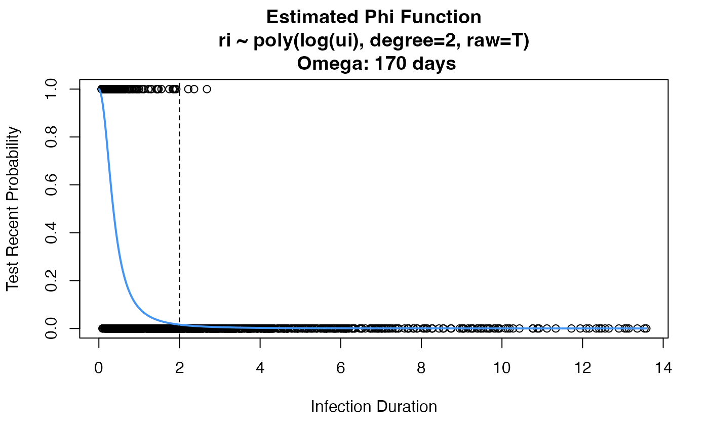

enhanced.Rmd
library(XSRecency)In this vignette, we show how to use the enhanced estimator that incorporates prior HIV test results into the cross-sectional incidence estimate. In the process, we will show how to use the data to estimate properties of recent infection testing algorithms.
Can either use the pre-loaded data in this package, or use your own
that you have downloaded through the function with the optional argument
filepath.
# Define a recent infection as LAg <= 1.5 and viral load > 1000
f <- function(l, v){
v <- ifelse(l > 1.5, 0, v)
return(
ifelse((l <= 1.5) & (v > 1000), 1, 0)
)
}
# Get dataset
phidat <- createRitaCephia(assays=c("LAg-Sedia", "viral_load"), algorithm=f)
#> There are 53 missing values for viral_load
#> Removing 10 observations with missing recency indicator after application of the algorithm.
# Convert infection duration to years
phidat$ui <- phidat$ui / 365.25
head(phidat)
#> id ui ri
#> 1: 72748497 1.9603012 0
#> 2: 72748497 2.4202601 0
#> 3: 87007074 0.9856263 0
#> 4: 87007074 1.9055441 0
#> 5: 87007074 3.2580424 0
#> 6: 44656860 1.0047912 0We can now use the CEPHIA data from above to estimate a phi function. We are doing this purely for the purposes of simulation. Usually, this is done internally in the function.
# use this argument if you want to get an estimated phi function, rather than just MDRI summary
rita.props <- estRitaProperties(
phidat=phidat,
maxT=10,
bigT=2,
use_geese=TRUE, # need this when have multiple observations per individual
formula="ri ~ poly(log(ui), degree=2, raw=T)",
family=binomial(link="logit"),
min_dt=TRUE, # need this when doing log(ui)
return_all=T,
plot_phi=T
)
# Use our estimated phi function to simulate recent infection indicators
sim <- simCrossSect(phi.func=rita.props$phi,
incidence_type="constant", prevalence=0.29, baseline_incidence=0.032)
set.seed(10)
df <- sim(5000)Simulate prior HIV tests as 10% of HIV positive individuals having uniformly distributed tests over the last 4 years
sim.pt <- simPriorTests(ptest.dist=function(u) runif(1, 0, 4),
ptest.prob=function(u) 0.1)
# Create prior testing data frame, only for those who are positive
ptdf <- sim.pt(df[df$di == 1,])
head(ptdf)
#> di ui ri ti qi deltai
#> 3524 1 3.309033 0 NA 0 NA
#> 3525 1 3.470821 0 NA 0 NA
#> 3526 1 4.790286 0 NA 0 NA
#> 3527 1 10.650930 0 NA 0 NA
#> 3528 1 9.697202 0 NA 0 NA
#> 3529 1 11.150070 0 NA 0 NAApply the enhanced estimator using the CEPHIA data before that we used to simulate our current dataset, and the same model for the test-recent function. See for details on additional values returned.
estimate <- estEnhanced(
n_p=nrow(ptdf),
n=nrow(df),
ptdf=ptdf,
beta=0,
beta_var=0,
big_T=2,
phidat=phidat,
use_geese=TRUE,
formula="ri ~ poly(log(ui), degree=2, raw=T)",
family=binomial(link="logit"),
min_dt=TRUE
)
#> Time difference of 0.8174682 secs
estimate$est
#> [1] 0.0329671
estimate$var
#> [1] 2.043809e-05